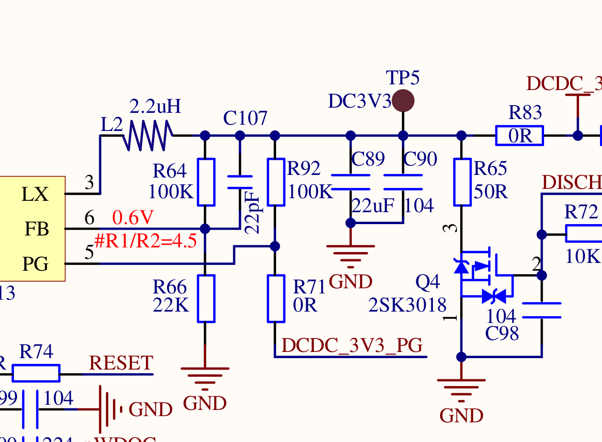

电感与磁珠：储能和滤波不是一回事
电感是「电流的惯性」：电流不能突变，想变就得加电压。DCDC 靠它储能做转换，磁珠靠它把高频噪声变成热。两者外形常常一样（都是黑色小方块），但一个是储能器件，一个是耗能器件，混用会直接炸机。这一章把 v=L·di/dt 讲到「纹波该多大、饱和电流够不够」。
读完这一章，你应该能
- 写出 v=L·di/dt 与 E=½LI²，解释「电感电流不能突变」
- 看懂三个关键参数：Isat（饱和）、Irms（温升）、DCR（直流电阻）
- 用 ΔI = Vout(1−D)/(L·f) 算出 DCDC 的纹波电流与峰值电流
- 说清磁珠为什么不能当 DCDC 电感、电感为什么不能当磁珠
- 用本板 L2 2.2µH、L1/L3 4.7µH、以太网 220R 磁珠验证
1.5.1电流的惯性：v = L·di/dt
电感的定义式：v = L · di/dt。含义是：电感中的电流不能突变。想让电流变化，必须在它两端加电压；变化越快（di/dt 越大），需要的电压越高。
这解释了三个现象：
- 断开电感瞬间会产生很高的反向电压（di/dt 极大），所以继电器、蜂鸣器、电机都要加续流二极管；DCDC 里则由低侧 MOS 或肖特基承担续流。
- 电感对直流是短路（di/dt=0，电压为零，只剩 DCR），对交流阻抗随频率上升。
- 储能 E = ½LI²：DCDC 每一周期把能量从电感搬到输出，电感量越大、电流越大，能搬的越多。
阻抗：|ZL| = 2πfL。算两个数：4.7µH 在 500kHz 是 14.8Ω，在 100Hz 只有 3mΩ——同一个器件，低频几乎透明，高频才是「墙」。这就是电感能「通直流、阻交流」的原因。
1.5.2三个参数：饱和、温升、DCR
| 参数 | 含义 | 超了会怎样 |
|---|---|---|
| Isat | 磁芯饱和电流：电感量掉到标称 70%（或 90%）时的直流电流 | 电感量骤降 → 纹波暴涨、峰值电流失控、DCDC 过流保护甚至烧 MOS |
| Irms | 温升电流：使线圈温度上升 40°C（常见判据）的电流 | 线圈过热、绝缘老化、DCR 上升、效率下降 |
| DCR | 直流电阻（mΩ 级） | I²R 损耗：2A 通过 50mΩ 就是 0.2W，效率与温升都受影响 |
选型判据：峰值电流 < Isat 的 80%；有效电流 < Irms 的 80%。只看电感量不看这两个，是新手最典型的错误——「4.7µH 一样的啊」，可一个是 1A 饱和、一个是 5A 饱和。
1.5.3DCDC 电感怎么算：纹波与峰值
Buck 电路在开关导通期间，电感电流线性上升；关断期间线性下降。纹波（峰峰值）近似：
ΔI = Vout × (1 − D) / (L × f)，其中 D = Vout/Vin
算本板 U8（TMI3113，输出 DCDC_3V3）这一路，取 L2 = 2.2µH、f = 1MHz、Vin=5V、Vout=3.32V：
- D = 3.32/5 = 0.664，1−D = 0.336；
- ΔI = 3.32×0.336/(2.2µH×1MHz) = 1.115/2.2 ≈ 0.51A；
- 若负载 1A，峰值 Ipk = 1 + 0.51/2 ≈ 1.26A，谷值 0.74A。
所以这颗电感的 Isat 至少要 >1.6A（1.26/0.8），Irms 要 >1A。选 4.7µH 的话 ΔI 降到 0.24A，峰值 1.12A，余量更大，但电感体积/成本上升——电感量与纹波是反比关系，这是设计时最直接的取舍。
再看反馈：图里 R64=100K、R66=22K，注释写「#R1/R2=4.5」「0.6V」，即 Vout=0.6×(1+100/22)=3.33V。这与 1.2 章用 DCJ5060 反推出的 0.768V 是两颗不同的芯片、两个不同的基准——读图时必须逐颗查，不能跨芯片套用。

1.5.4磁珠：看起来像电感，其实是「高频电阻」
磁珠（ferrite bead）是铁氧体材料做的小元件，等效为「小电感 + 一个随频率上升的电阻」。它的标法是在某个频率下的阻抗，例如 220Ω@100MHz。关键差别：
| 对比项 | 功率电感 | 磁珠 |
|---|---|---|
| 目的 | 储能、传递能量 | 吸收高频噪声，转成热 |
| 直流电阻 | 几十 mΩ，要小 | 几十 mΩ–几 Ω |
| 饱和 | 有明确 Isat，必须留余量 | 也会饱和，但通常电流很小 |
| 能当 DCDC 电感吗 | 能 | 不能：阻抗特性不对、损耗大、饱和后失效 |
本板 MINI p3 的以太网供电就用了磁珠：L3 220R@100MHz + C13 10µF，给 PHY 的模拟电源做「π 型滤波」。它的作用是拦住开关噪声进 PHY，不是储能。若把它换成 4.7µH 功率电感，滤波效果反而变差（低频阻抗不够、Q 值不合适）。
反过来说，把磁珠当 DCDC 电感用，会立刻出问题：磁珠的饱和电流通常只有几十~几百 mA，DCDC 的峰值电流一上去就饱和，电感量塌到接近 0，纹波电流暴涨，MOS 过流。
1.5.5续流与反向电动势：为什么必须有「泄放路径」
回忆 v=L·di/dt：如果电流必须在极短时间内归零（比如关断 MOS、拔掉继电器），di/dt 极大，电感会产生极高的反向电压，击穿驱动管。解决方案是给它一条续流通路：
- Buck（同步整流）：低侧 MOS 在关断期间导通，电感电流经它续流。
- 非同步 Buck：用肖特基二极管续流（板上 SS34 就是这类角色之一）。
- 继电器/蜂鸣器/电机：线圈并联续流二极管（方向反接），把能量泄回电源。
本板蜂鸣器由 Q1（SS8550 PNP）驱动，属于「小功率、可听声」场景，续流要求不高；但如果你自己加继电器，务必加 1N4148/SS34 级别的续流管，否则三极管会被反向电压打穿。
1.5.6怎么测：LCR、DCR 与「饱和验证」
- 测电感量：LCR 表在 100kHz（或手册指定频率）测。注意测试电流很小，测出来的是「小信号电感」，不代表大电流下还有这么多。
- 测 DCR：万用表四线/电阻档，读数通常是几十 mΩ。这个值直接进 I²R 损耗计算。
- 验证饱和：给电感加直流偏置（电源 + 限流电阻 + 电流表），逐步加大电流并测电感量；当电感量掉到 70% 时那个电流就是实际 Isat。没有专用仪器时，可用「DCDC 满载 + 示波器看纹波是否突然变大」间接判断。
现场排查的一个信号：DCDC 满载时纹波突然变大、效率骤降、电感发烫——优先怀疑电感饱和（选型电流不够）或磁芯破损。
1.5.7五个设计误区
- 只看电感量，不看 Isat。同样的 4.7µH，饱和电流可能差 5 倍。
- 把磁珠当电感用。磁珠是耗能器件，不能储能，饱和电流极小。
- 用 LCR 小信号测值判断大电流性能。小信号电感 ≠ 满载电感。
- 忘算 DCR 损耗。2A 过 50mΩ 就是 0.2W，效率与温升都要算。
- 电感靠近高阻节点/晶振。漏磁会耦合噪声，尤其是非屏蔽绕线电感。